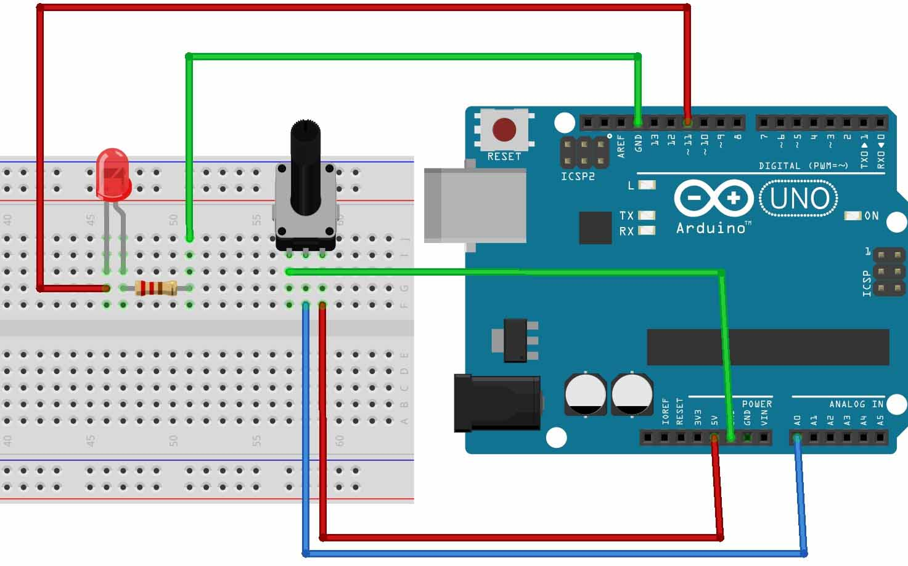

Arduino uno Buton ile Led Yakma
Alptuğra'nın Arduino Rehberi
Buton ile Led yakma
Malzemeler:
Arduino Uno
Led
Breadboard
220 Ω direnç
erkek-erkek jumper kaplo
Potansiyometre
Devre kurulumu

Kod:
int led = 11 ;
int pot_pin = A0;
int pot_deger = 0;
void setup() {
pinMode(led, OUTPUT);
}
void loop() {
pot_deger = analogRead(pot_pin);
pot_deger = map(pot_deger,0,1023,0,255);
analogWrite(led,pot_deger);
}